What year is it?
A Bayes' Theorem Tribute to Back to the Future
October 21st, 2015
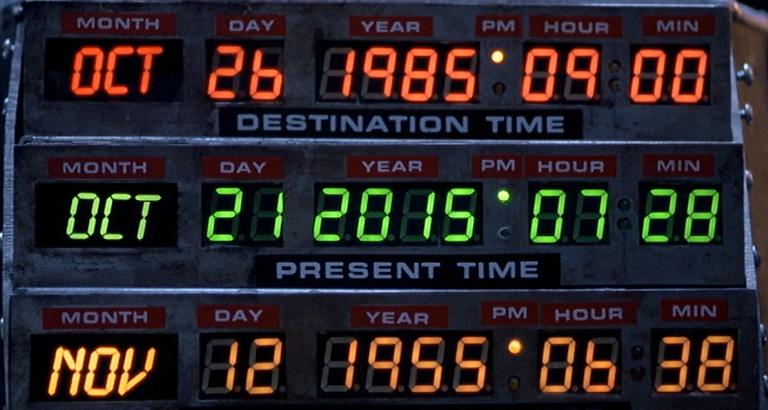
Today is Back to the Future Day. As a tribute to this great event in history, my class today is taught with this in mind.
This article is brought to you by Doc Brown -- yes, seriously.
Bayes' Theorem is a 250 year old mathematical result than underpins a crazy amount of modern technology -- so given how it has transcended the years, it's perfect to explain in a time travel context. Bayes' theorem is running your everyday life, it is the backbone inside everything from email spam filters, to medical diagnoses, to how your smartphone is so smart. This article explains just the basics -- there are many other beautiful explanations of the power of this framework to be found out on the interweb.
So, you get in your time machine, and accelerate to 88mph... and zzzzzaaappp! You have travelled through time. Trouble is, as we all know, time travel ain't all that reliable. So, which year have you ended up in? Well, due to previous experience with this time machine, perhaps you know it has dropped you in one of four possibilities: 1885, 1955, 1985, or 2015, with equal chance. In the formal notation of probability theory, this is:
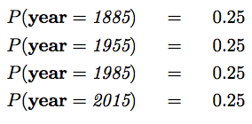
So basically we have no idea. So, let's look out the window, and figure out which it is.
You look out the window of your time machine, and see a train... and it's a steam train.

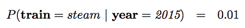
Note that this is not the probability of observing a steam train when you look out of your time machine window. We have assumed that you do see a train -- so this is the probability of that train being steam-driven. This is a subtle difference in wording, but subtle wording can make all the difference when dealing with probabilities.
There is a further subtlety, in that we cannot count all the trains in existence, and where they are at this point in time. So this is not a probability like a roll of a dice, where we have seen previous events and can estimate the chances. This is a belief, like our belief in whether there is life in other solar systems -- we cannot observe this, we can only believe it, or not, with different degrees of belief. If you're interested in more reading, this is called the Bayesian versus Frequentist view of probability.
What is our belief in that train being a steam train, if you were in a different year? Higher you may believe? Well let's incorporate that belief.
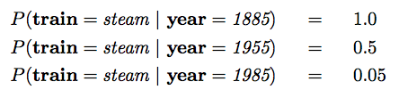
Here we can read that in 1885, all trains were steam trains. By 1955, there were a lot less, and by 1985, even fewer. So, before we looked out the window, we believed that there is equal chance of being in each of 1885, 1955, 1985, or 2015. Now we see the (steam) train, what should we believe? Bayes' Theorem has the answer.
For the case we are looking at, this can be stated as so:
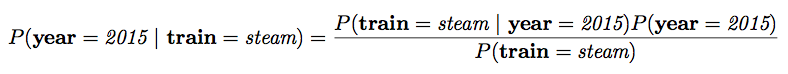
This is the power of Bayes Theorem -- it has inverted (or flipped round) the probability that we know. We know (or can guess) the chances of seeing a steam train in 2015, and we know (or can guess) the chances of being in any particular year to start with. Now, Bayes Theorem gives us a formula giving us the chances of being in a year, given that we see the steam train.
But... it seems to require an additional term, in the denominator. Luckily, a simple rule of probability theory, called the sum rule, allows us to calculate it.
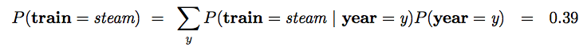
Now, we know all our terms, so we can calculate....
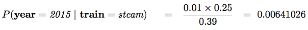
i.e. a chance of about 1 in 156. Pretty small. Working through the same numbers for other years, we find that...
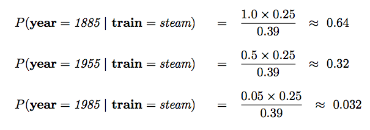
So, we're pretty confident we're in the year 1885, right? Well, quite confident, not completely. So let's collect more evidence. Look out of your time machine window again....
All of a sudden you see someone walk by, and they are wearing Nike shoes. Now, you know (well I know anyway, with the help of Wikipedia) that Nike shoes were not first marketed until 1971. You also know that the shoes were more common in 1985 than they are in 2015, since everyone in 1985 was a bit of a fashion victim.
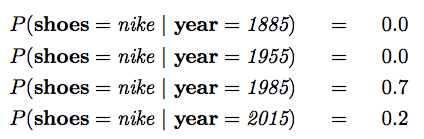
So, now let's incorporate that information. Now of course, we're starting from a different perspective than earlier -- we thought originally there was an equal chance of being in 1885/1955/1985/2015, but then saw the steam train, so our prior belief over the possible years has changed. Now it is:
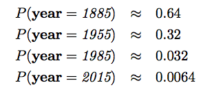
Note that I've used the approximately-equal-to symbol just to avoid writing out loads of decimal points. These probabilities add up to one, since we are sure we have to be in one of these four years. So now, let's apply Bayes' Theorem again...
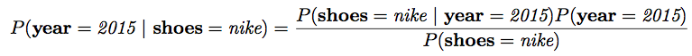
Let's use the sum rule again to calculate the denominator here:
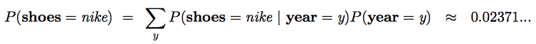
And plug these numbers into Bayes' Theorem again...
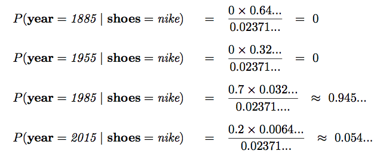
So, after observing the steam train, and the Nike shoes, we realise we have travelled through time, and are in the year 1985, with probability 0.945. We updated our belief in the year, via observation of evidence -- and used Bayes' Theorem to do so. If we had not observed the steam train, but only the Nikes, we would only have a probability for being in the year 1985 of 0.777... but because we observed both (even though the steam train was quite improbable in 1985) we incorporated all available evidence, and became more confident in where our time machine has taken us.
After this, we get back in our time machine, and travel back (deterministically) to good ol' October 21st, 2015.
Welcome to the future, Marty.